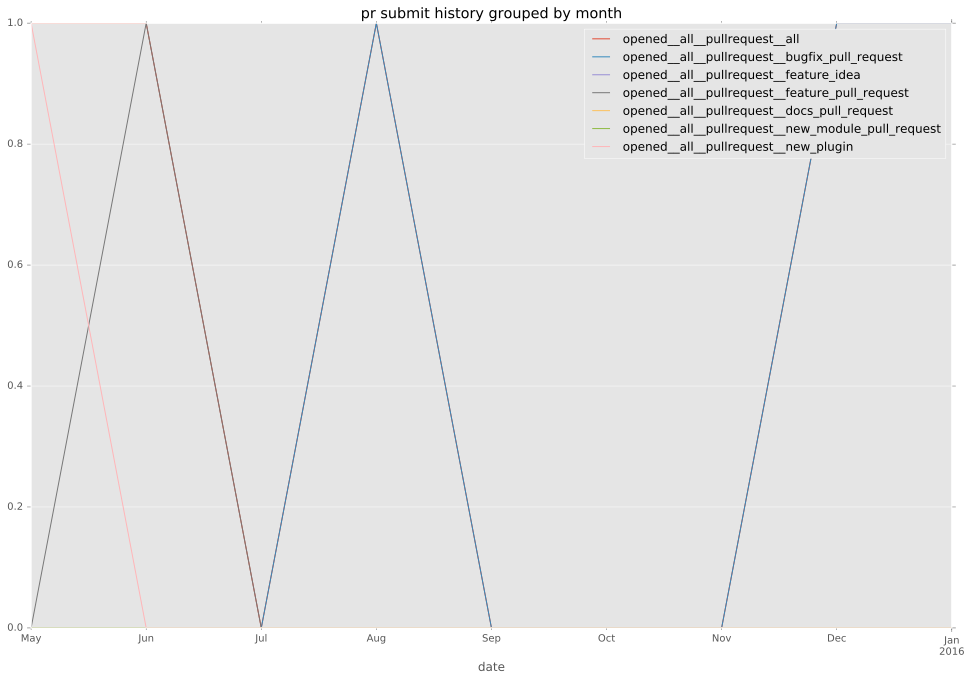
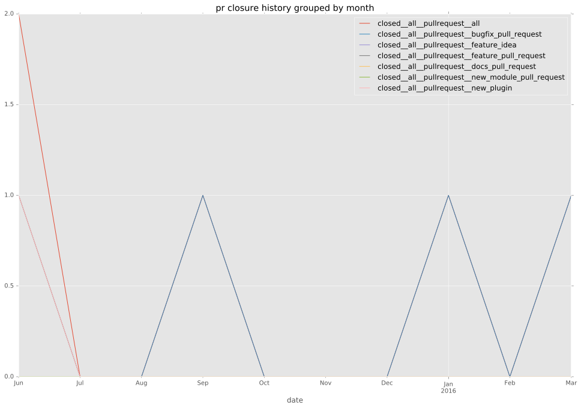

authors
- loia
maintainers
- loia
contributors
- gundalow : 1 commits
- abadger : 1 commits
- ferrants : 23 commits
- bcoca : 1 commits
- resmo : 1 commits
- loia : 53 commits
total issue counts
feature pull request: 1
pullrequest: 5
docs pull request: 1
bugfix pull request: 2
issue: 2
new plugin: 1
bug report: 2
issue history
pullrequest history


days open by issue type
bugfix pull request
count: 4
std: 36.9504172281
min: 18
max: 82
median: 50.0
mean: 50.0
all
count: 12
std: 70.252574632
min: 0
max: 241
median: 28.0
mean: 52.1666666667
pullrequest
count: 0
std: nan
min: nan
max: nan
median: nan
mean: nan
docs pull request
count: 2
std: 0.0
min: 0
max: 0
median: 0.0
mean: 0.0
feature pull request
count: 2
std: 0.0
min: 0
max: 0
median: 0.0
mean: 0.0
issue
count: 0
std: nan
min: nan
max: nan
median: nan
mean: nan
new plugin
count: 2
std: 0.0
min: 38
max: 38
median: 38.0
mean: 38.0
bug report
count: 2
std: 93.3380951166
min: 109
max: 241
median: 175.0
mean: 175.0
closures grouped by total days open